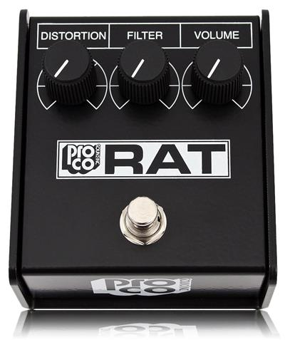
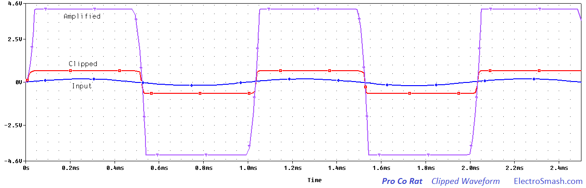
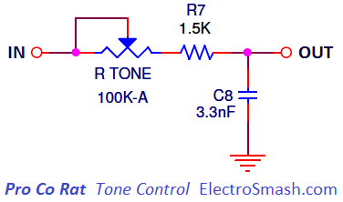
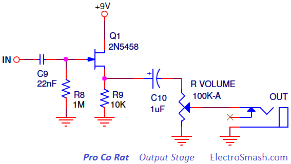

The Pro Co Rat is a distortion pedal by Pro Co Sound designed by Scott Burnham and Steve Kiraly in Kalamazoo, Michigan 1978. The original circuit and appearance suffered some changes over the different revisions but the tone remained the same.
Due to the pedal success there are several versions designed by Pro Co like the Juggernaut (1979), R2DU (1984), RAT2 (1988), Turbo RAT (1989), Vintage RAT (1991), BRAT (1997), Deucetone RAT (2002), Juggernaut Bass RAT (2003), You Dirty RAT (2004),'85 Whiteface RAT Reissue (2010). 
Although the pedal was originally built as custom-order product in 1978, Pro Co began to mass produce it in 1979. In 2008 production moved to China and is now manufactured by Neutrik for Pro Co Sound.
Table of Contents:
1. Pro Co Rat Schematic.
2. Power Supply Stage.
3. Clipper Amplifier.
3.1 Voltage Gain.
3.2 Low/High Pass Filtering.
3.3 LM308 Op-Amp Selection.
3.4 Diode Clipping.
4. Tone Control.
5. Output Stage.
6. Pro Co Rat Frequency Response.
7. Resources.
1. Pro Co Rat Schematic
The Pro Co Rat circuit can be broken down into four simpler blocks: Power Supply, Clipper Amplifier, Tone Control and Output Stage:
The design is based on the LM308 single op-amp. The distortion is produced using a variable gain circuit with diodes clipping the waveform. The distortion stage is followed by a tone filter and an output buffer stage that ends up with a tone control.
Pro Co Rat Circuit Layout.
It uses a single layer PCB with standard through-hole components which easily fits in the steel enclosure. The different version/revisions use different substrates.
Pro Co Rat Parts List/Bill of Materials.
C1, C9 22nF
C2 1nF
C3 30pF
C4 100pF
C5 2.2uF
C6, C7 4.7uF
C8 3.3nF
C10, C13 1uF
C11 100uF
C12 0.1uF
D1, D2 1N914
D3 1N4002
Q1 2N5458
RVOLUME,RTONE,RDISTORTION 100K-A
R1, R2, R8 1M
R3, R6 1K
R4, R10 47
R5 560
R7 1.5K
R9 10K
R11, R12 100K
U1 LM308
2. Power Supply Stage.
The Power Supply stage provides 9V for the active circuits (op-amp and transistor). Generating 4.5 volts using a simple voltage divider (R11, R12) to be used as virtual ground.
- Caps C11 and C12 remove ripple from the 9V supply, the C13 does the same in the 4.5V line.
- R10 47Ω resistor filter noise in power line, this low-value resistor together with the caps C11 and C12 will create a low pass filter which attenuates high-frequency impulse noise.
- Diode D3 is placed for reverse polarity protection.
3. Clipper Amplifier.
The Clipping Amplifier is the core of the circuit, it is made of a non-inverting op-amp amplifier with variable voltage gain and some filters to shape the distortion response. Two diodes D1 and D2 will perform the hard clip action.
- The 1MΩ input resistor R1 next to the input jack to ground is a pull-down resistor, which avoids popping sounds when the pedal is switched on. This input pull-down resistor becomes the maximum input impedance of the pedal.
- The 22nF cap C1 blocks DC and provides simple high pass filtering. All the interesting guitar signal will pass through, only harmonics below 7.2Hz will be attenuated. The cut-off frequency is defined by the formula:
- The 1K resistor R3 protects the op-amp from input over currents. The 1nF cap C2 shunts high freqs to ground and out to mellow the signal.
- The big C7 is just a coupling capacitor which removes DC content and connects the op-amp to the diodes stage. The resistor R6 will limit the amount of current through the diodes.
Pro Co Rat Input Impedance.
The input impedance can be calculated as:
note: 494KΩ is a high input impedance and can be considered fairly good for a distortion pedal. Anyway, the best practice is to keep the input impedance at least in 1 MΩ, avoiding tone sucking. By increasing R1 and R2 values to 2MΩ for instance, the pedal input impedance will rise to 1MΩ and the pedal will keep better all the guitar original sonic features.
3.1 Voltage Gain
The voltage gain is trimmed with the distortion knob, in the non inverting topology can be calculated as:
note: this voltage gain can be considered slightly high for a distortion pedal and similar to other distortion pedals like Big Muff Pi (Gvmax=60dB), MXR Distortion + (Gvmax=46dB) or Tube Screamer (Gvmax=41dB). However, the voltage gain of this stage will not reach such a values as 67dB. The gain will be limited by op-amp characteristics and also by the clipping diodes action, as it will be studied in the Diode Clipping Section.
3.2 Low/High Pass Filtering.
It is usual to find a combination of low pass and high pass filters before or within the clipping stage in distortion pedals. The distortion makes the original guitar signal more harmonically complex, this means that more amounts of distortion are being added, it can be more difficult to give each sound its own space in the band mix. Artificially band-limiting a distorted signal, using both high and low-pass filters, can help it sit more comfortably in a mix, by preventing its spectrum from spreading over too wide an area.
In the image above, the response of the Clipping Amplifier is shown. The signal is band limited in high and low frequencies. This mid hump around 1KHz helps to keep the guitar sound from getting lost in the overall mix of the band.
Harmonics below 1.5 KHz and 60Hz are attenuated due to the high-pass filters. In high frequencies there is also a roll-off because of the low pass filter and the op-amp gain-bandwidth product, both effects more noticeable at high-gain (blue lines).
Low pass Filter.
The small 100pF capacitor C4 across the feedback resistor works as a low pass filter, softening the corners of the guitar waveform and mellowing out the high end before the clipping.
The cut-off frequency of the filter is defined by the formula:
The RDISTORTION potentiometer will shift the fc1 frequency, making the action of the 100pF is more dramatic when the distortion control is maxed out at 100K, bringing the cut-off minimum frequency to the audible frequencies (16 KHz) and then softening the distortion. When the distortion knob is not maxed out, the fc goes higher being less noticeable.
High Pass Filter.
There are two parallel RC networks formed by R4C5 and R5C6 from the (-) input to ground. They are an active high pass filter, placing two poles and attenuating frequencies below the cut-off frequencies:
Harmonics below 1.5KHz will have an attenuation 20dB/dec and lower harmonics below 60Hz will be severely muted at 40dB/dec. This filtering provoke that bass notes will be attenuated before the clipping action, making the low end less clipped and creating a frequency selective distortion.
3.3 The Op Amp Selection.
The original Rat pedal uses the LM308N Motorola op-amp, the Texas Instruments OP07DP was a replacement op-amp used in the new models. Part of the Rat's tone remains on the choice of the chip as a function of the Slew Rate, the Gain-Bandwidth Product, and the Compensation Capacitor:
The Slew Rate.
It refers to how fast the op-amp can swing its output. If the signal to be amplified is too fast (high frequencies), the op-amp will not be able to perform properly, only amplifying signals below the slew rate limit.
In the image above, the slew rate of the LM308 is shown together with the TL071 (standard op-amp used in stompboxes) for comparison purposes. The TL071 slew rate is 13V/us, the LM308 is 0.3V/us around 40 times slower, it indicates how slow is the Rat op-amp is.
- The slew rate is inversely proportional the compensator capacitor, the smaller the cap the faster the slew rate.
For a guitar signal (approximated to a sinusoidal) the Slew Rate of the op-amp will limit the rise speed of the signal following the equation:
Where Vpeak is 9V, and the Slew Rate taken from the datasheet image is 300000 V/s.
That means that the op-amp output will not be able of following harmonics higher than 5.3KHz, so high frequencies will not pass through the amplifier, limiting or muting high harmonics.
The Gain-Bandwidth Product
It is relative to the gain setting; the Open Loop Frequency Response (gain-bandwidth product) graph below extracted from the datasheet, shows that not all frequencies can be amplified the same quantity.
For the Rat maximum voltage gain, which is 67dB, the frequencies below 500Hz will be amplified without problems, but higher frequencies will have less and less amplification as the graph shows. At 10KHz, for instance, the max. voltage gain will be no more than 30dB.
In this way, the amplification of the guitar signal is frequency dependent, bass harmonics will take maximum gain while higher freqs will suffer less gain.
The Compensation Capacitor.
Bandwidth and Slew Rate are proportional to 1/Ccompensation, the smaller the cap the bigger the Bandwidth and Slew Rate. The typical and suggested value by the datasheet is 30pF (same as used in the Rat design).
The above image shows again how the high freqs are attenuated, using a 30pF cap. Using bigger/smaller caps the Bandwidth and Slew Rate will be reduced/improved.
Summarizing these 3 effects, part of the signature sound of a Rat is essentially the op-amp collapsing under pressure and how the high-freqs are attenuated and not treated in a linear way. The result of all this will be clipped by the diodes.
3.4 Diode Clipping.
The silicon diodes D1 and D2 do hard-clipping on the pre-amplified signal creating symmetric distortion in a similar way as the MXR Distortion+ or Boss DS-1 do. When the voltage difference (positive or negative) between the op-amp output and ground is bigger than the diodes forward voltage VF, the diode will turn on. As the diode turns on forward biased, the signal will be clipped to the VF value. The diode D1 will clip the positive semi-cycle signal to +VF and D2 will clip the negative signal semi-cycle to -VF.
The Rat uses 1N914 standard diodes, any other silicon compatible like 1N4148, 1N4448, or 1N916 can be replaced without troubles.

The passive Tone Control is a simple low pass filter. 
The cut-off frequency can be calculated as:
So the high harmonics above the fc selected by RTONE are attenuated like the graph below:
The range of the filter is pretty wide, being able to sweep almost all the audio spectrum from 475Hz to 32KHz. The Tone Control combined with all the other filters placed in the pedal will create a mid-hump, to be analyzed in the Frequency Response Section.
The clipped waveform will be affected by the low pass filter, as shown above, creating a shark fin shape as the tone control is maxed.
5. Output Stage.
The Output Stage is a JFET unitary gain amplifier in common drain (source follower) configuration. It is placed to create a low output impedance, that is good to keep tone integrity in the signal chain. It also isolates the volume stage from the Tone Control in order to make both controls independent, otherwise changing the volume will alter the tone: 
The JFET common drain is useful because it uses a very reduced amount of components, it has a high input impedance (approx R8=1MΩ) and a medium-low output impedance (few hundred of ohms).
- Volume Control: The passive volume control is a standard 100K audio potentiometer which bleeds part of the input signal to ground.
6. Frequency Response.
The frequency response of the Pro Co Rat is designed to empathize the mid frequencies. In order to do it, the waveform is filtered through the different stages, removing the harsh high-freq harmonics and the overloading bass presence.
- In the Clipping Amplifier Stage, there is a double RC network which places two poles and attenuates harmonics below 1.5KHz.
- There are several high pass filters, but the Tone circuit and the op-amp bandwidth limit will roll off harmonics higher than 1KHz.
Frequency Response with Linear time base:
Frequency Response with Logarithmic time base:
The frequency response of the Pro Co Rat is similar to the Tube Screamer response showing a mid-hump around 1KHz.
7. Resources.
LM308 Datasheet.
DIYStompboxes thread about the Rat op-amp.
Great article about Distortion in SoundonSound.com
Pro Co RAT models by Dosum.
Pro Co RAT in by Effects Data Base.
Pro Co RAT in Jaska`s Music Garage.
Pro Co RAT info by Muziq.be
Thanks for reading, all feedback is appreciated.
Our sincere appreciation to M. Chiampi for helping us with the article.

Some Rights Reserved, you are free to copy, share, remix and use all material.
Trademarks, brand names and logos are the property of their respective owners.


{kind=link}
{kind=link}
{kind=link}
{kind=link}
{kind=link}
{kind=link}
{kind=link}
{kind=link}
{kind=link}
{kind=link}
{kind=link}
{kind=link}
{kind=link}
{kind=link}
{kind=link}
{kind=link}